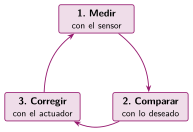
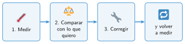

Programar un lazo cerrado
🤔 Pienso5 min
Qué hago aquí: Piensa un momento y contesta con lo que ya sabes. No pasa nada si no lo sabes: es para empezar.
Un ventilador quiere que la clase no pase de 25 grados. ¿Cuál es el sensor? ¿Y el actuador?
📖 Leo y aprendo15 min
Qué hago aquí: Lee despacio, mira los dibujos y los ejemplos, y quédate con la idea clave del final.
Un programa en lazo cerrado repite siempre tres pasos. Por eso va dentro de para siempre.

El valor deseado es lo que queremos conseguir. Por ejemplo, 25 grados.

✏️ Hago25 min
Qué hago aquí: Haz las actividades en orden. Empieza siempre por las básicas.
Ordena los pasos del 1 al 3.
Corregir Medir Comparar
En el programa del ventilador, ¿qué bloque mide? ¿Cuál corrige?
Monta el ventilador y pruébalo. Calienta la placa con la mano. ¿Se enciende?
Cambia el 25 por la temperatura de tu clase más 1. Pruébalo otra vez.
Escribe los tres pasos de un robot que quiere estar a 20 cm de la pared. Usa el sensor de ultrasonidos y un motor.
✏️ Puedes responder escribiendo, con un dibujo o un esquema, o contándolo en voz alta.
🚀 Amplío (si quieres saber más)
Qué hago aquí: ¿Has terminado? Lee la curiosidad o elige el reto. Es voluntario.
Cambia el ventilador para que tenga dos umbrales: se enciende si pasa de 26 y se apaga si baja de 24. Pista: dos bloques si, sin si no.
✅ Compruebo5 min
Qué hago aquí: Contesta sin mirar la ficha y marca cómo lo llevas.